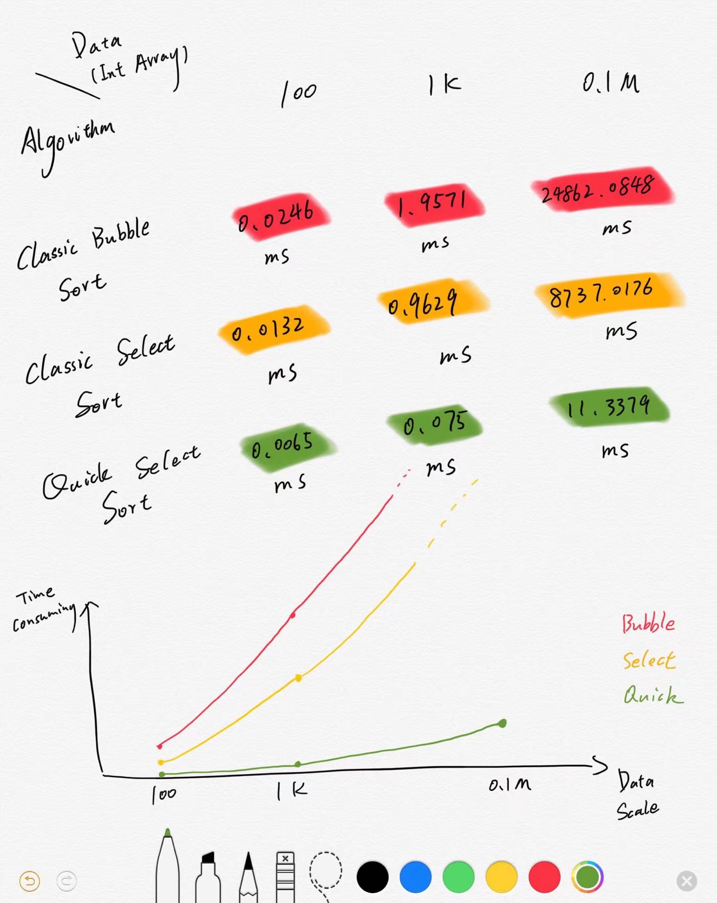

A simple comparison of three commonly used sorting algorithms
(Originally in Chinese, translated by Google Translate)
We all know or are familiar with some common sorting algorithms, but we may not have a clear understanding of the performance gap.
Here is a small experiment. We compare three common sorting algorithms: bubble sorting algorithm, sorting algorithm, and fast sorting algorithm.
In order to improve timing accuracy, the number of CPU clock cycles (time stamp) is specifically used to achieve timing accuracy to the microsecond level.
The results were unexpected and shocking. As the size of the test data grew, the time for bubbling and sorting increased dramatically, especially when the data reached 100,000 scales, the bubble sorting time almost increased to an unbearable Half a minute. Although quick sorting is more complicated than bubbling and sorting, it is obvious that it has advantages when dealing with large-scale data.
Therefore, when dealing with small-scale data, the use of bubbling and sorting can obviously lead to higher development efficiency, but when dealing with medium- and large-scale data, it is wise to use fast sorting or other more advanced algorithms ( Although the bubble sorting algorithm can improve performance by improving it)

It is true that this small experiment has too many defects, such as using only a small number of experimental data, only testing the integer data and not exploring other data types such as float type etc. But the conclusions drawn are not lacking in reference value.
The right is to throw a brick to attract jade.
All roads lead to Rome, and some people were born in Rome.